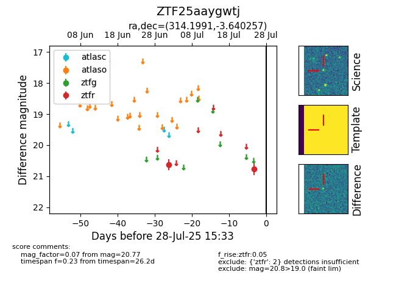

Target ZTF25aaygwtj at 2025-07-28 15:33, see:
FINK: fink-portal.org/ZTF25aaygwtj
Lasair: lasair-ztf.lsst.ac.uk/objects/ZTF25aaygwtj
ALeRCE: alerce.online/object/ZTF25aaygwtj
alt names
ZTF25aaygwtj (ztf,fink)
coordinates:
equatorial (ra, dec) = (314.1991,-3.64026)
galactic (l, b) = (44.8675,-29.40036)
photometry
last ztfr=20.77
2 ztfr detections
